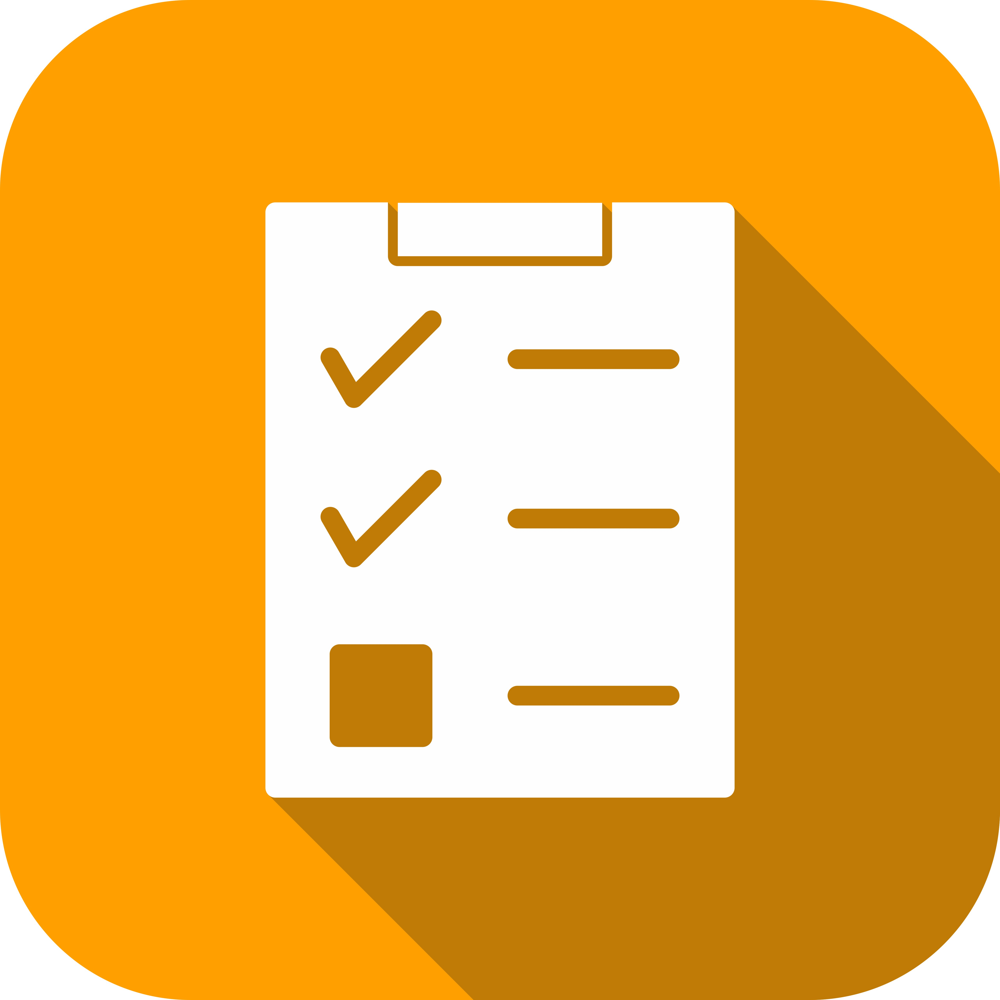
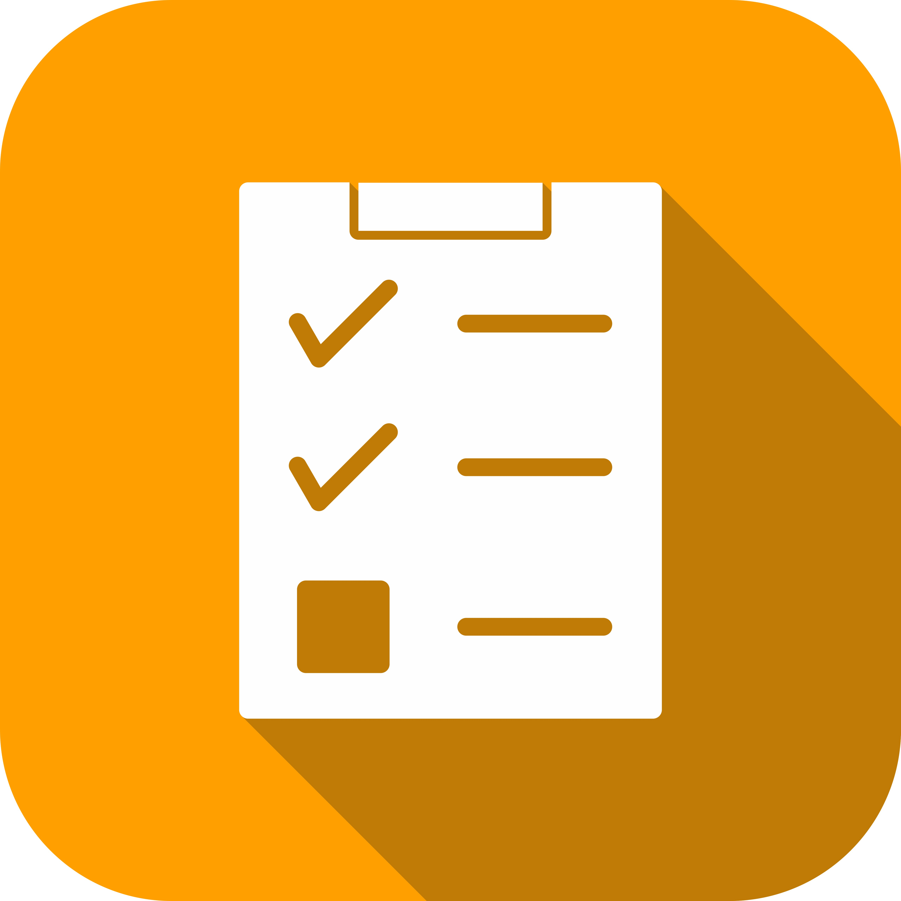
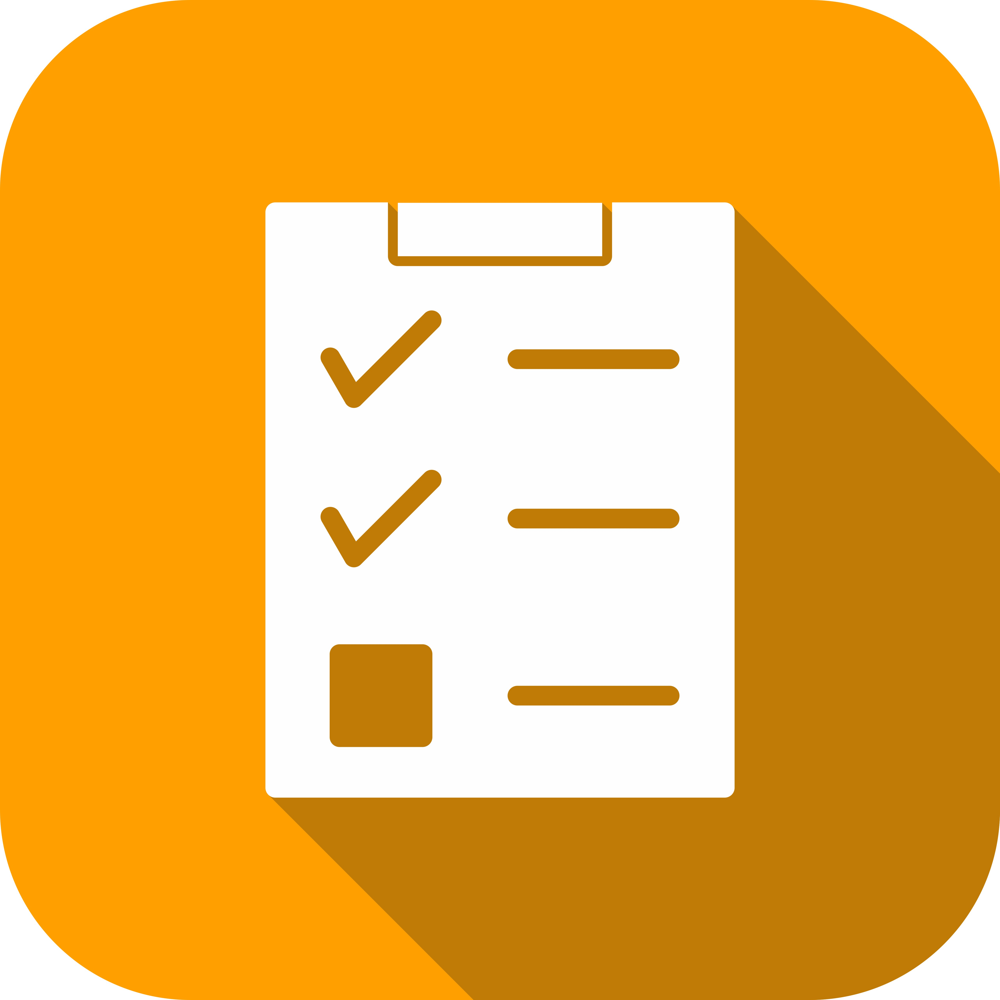
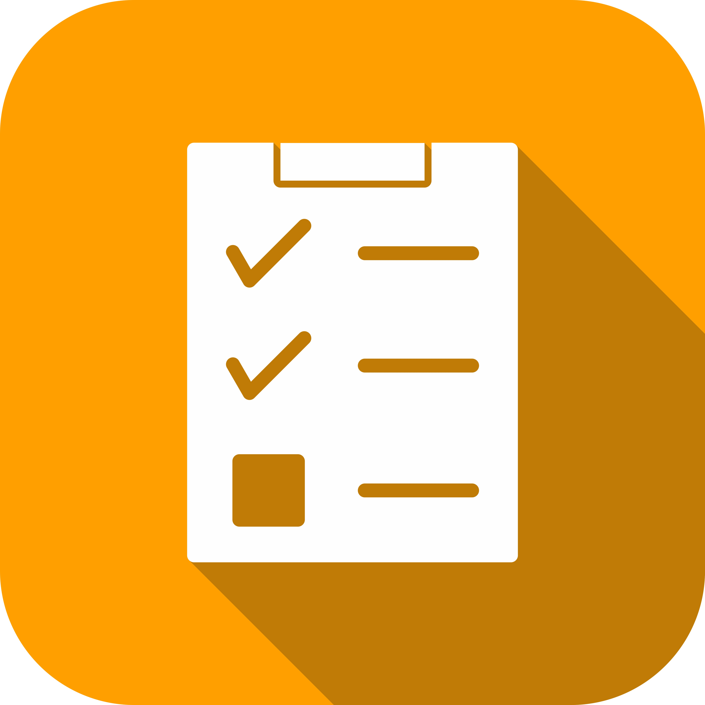
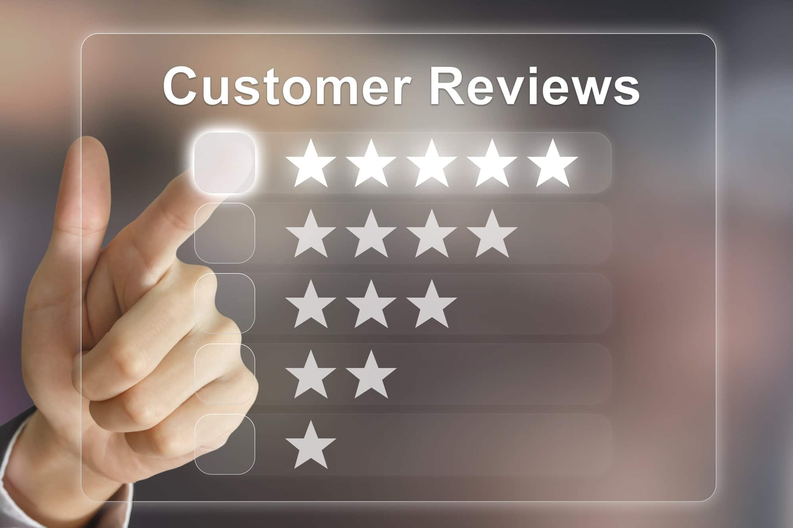

A robust to-do list app encompasses a variety of features designed to enhance user productivity and experience. Core functionalities include user authentication options such as secure sign-up/log-in and social media integration. Task management is streamlined with capabilities to add, edit, and delete tasks, along with organizing them into categories or projects, and tagging them with labels. Subtasks allow users to break down complex tasks. Prioritization is facilitated through priority levels and due dates, complemented by push notifications and email reminders for timely alerts. Recurring tasks can be set to repeat at specified intervals, and an intuitive user interface with options like dark mode ensures a pleasant user experience.Collaboration features enable sharing tasks or lists, assigning tasks to others, and adding comments or notes for better communication. The app should include a search bar and filter options for efficient task retrieval. Progress tracking through task status updates and visual indicators is essential, alongside calendar sync and third-party integrations to enhance functionality. Cloud sync and data backup ensure that tasks are accessible across devices and data is secure. Analytics and reporting tools provide insights into productivity, while customization options such as themes and customizable views cater to user preferences. Offline access allows task management without internet connectivity, and voice commands offer an alternative input method. Additional features like attachment support, data encryption, two-factor authentication, and accessibility support ensure the app is versatile, secure, and user-friendly.
Samantha P.
⭐️⭐️⭐️⭐️⭐️
"As a busy professional, this to-do list app has been a game-changer for me. It's intuitive, easy to use, and helps me stay on top of my tasks effortlessly. The reminder feature ensures I never miss a deadline!"
Michael T.
⭐️⭐️⭐️⭐️
"I love how this app syncs seamlessly across all my devices. Whether I'm on my phone or laptop, my tasks are always up-to-date. The interface is clean and simple, making task management a breeze."
Emily R.
⭐️⭐️⭐️⭐️⭐️
"Organizing my day has never been easier. The color-coded labels and priority settings allow me to focus on what's important. I also appreciate the recurring task feature for my weekly chores."
David L.
⭐️⭐️⭐️⭐️⭐️
"The collaboration feature is fantastic. My team and I can share task lists, assign tasks to each other, and track progress in real time. It has significantly improved our productivity and communication."
Olivia M.
⭐️⭐️⭐️⭐️
"Great app! I especially like the calendar integration, which helps me see my tasks in the context of my overall schedule. The notifications are also very helpful in keeping me on track."
John K.
⭐️⭐️⭐️⭐️⭐️
"This to-do list app is packed with features yet remains user-friendly. The ability to add notes, attachments, and deadlines to tasks has made managing my projects so much more efficient. Highly recommend!"
Sophia H.
⭐️⭐️⭐️⭐️
"Being able to customize the app to my needs is a big plus. The widget on my home screen keeps my tasks visible, and the dark mode is easy on the eyes during late-night work sessions."
Users consistently praise the to-do list app for its intuitive design and comprehensive features that significantly enhance productivity. Many highlight the seamless task management capabilities, including the ability to easily add, edit, and organize tasks into categories or projects. The priority levels and due date settings, combined with timely push notifications and email reminders, help users stay on track with their responsibilities. The collaborative features, such as sharing tasks and assigning them to others, have been particularly beneficial for team projects and family planning. Users also appreciate the customizable interface, with options for themes and views, which allows them to tailor the app to their personal preferences. The cloud sync and data backup features provide peace of mind, ensuring that no task is ever lost and everything is accessible across devices. Additionally, the integration with other productivity tools and calendars has streamlined workflows for many. Overall, the app is lauded for its robust functionality, user-friendly interface, and the significant positive impact it has on users' daily lives and organizational efficiency.

Support Email: support@productivitypro.com
Customer Service Phone: +1 (800) 555-1234
Website: www.productivitypro.com
Office Address:
Productivity Pro Inc.
123 Taskmaster Avenue, Suite 456
Productivity City, PC 78901
USA
Business Hours:
Monday to Friday: 9:00 AM - 6:00 PM (EST)
Saturday: 10:00 AM - 4:00 PM (EST)
Sunday: Closed
facebook:
facebook.com/productivitypro
Twitter: twitter.com/productivity_pro
Instagram: instagram.com/productivitypro